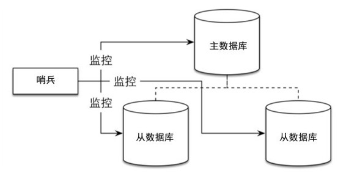
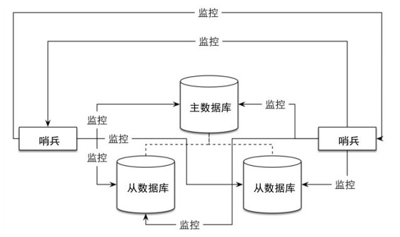

8.2 哨兵
8.1节介绍了Redis中复制的原理和使用方式，在一个典型的一主多从的Redis系统中，从数据库在整个系统中起到了数据冗余备份和读写分离的作用。当主数据库遇到异常中断服务后，开发者可以通过手动的方式选择一个从数据库来升格为主数据库，以使得系统能够继续提供服务。然而整个过程相对麻烦且需要人工介入，难以实现自动化。
为此，Redis 2.8中提供了哨兵工具来实现自动化的系统监控和故障恢复功能。
注意 Redis 2.6 版也提供了哨兵工具，但此时的哨兵是1.0版，存在非常多的问题，在任何情况下都不应该使用这个版本的哨兵。所以本书中介绍的哨兵都是Redis 2.8提供的哨兵 2，后文不再赘述。
顾名思义，哨兵的作用就是监控Redis系统的运行状况。它的功能包括以下两个。
（1）监控主数据库和从数据库是否正常运行。
（2）主数据库出现故障时自动将从数据库转换为主数据库。
哨兵是一个独立的进程，使用哨兵的一个典型架构如图8-3所示。

图8-3 一个典型的使用哨兵的Redis 架构。虚线表示主从复制关系，实线表示哨兵的监控路径
在一个一主多从的Redis系统中，可以使用多个哨兵进行监控任务以保证系统足够稳健，如图8-4所示。注意，此时不仅哨兵会同时监控主数据库和从数据库，哨兵之间也会互相监控。

图8-4 一个主从系统中可以有多个哨兵同时监视整个系统
在理解哨兵的原理前，我们首先实际使用一下哨兵，来了解哨兵是如何工作的。为了简单起见，我们将以图8-2所示的架构为例进行模拟。首先按照8.1节介绍的方式建立起3个Redis实例，其中包括一个主数据库和两个从数据库。主数据库的端口为6379，两个从数据库的端口分别为6380和6381。我们使用Redis命令行客户端来获取复制状态，以保证复制配置正确。
首先是主数据库：
redis 6379> INFO replication
# Replication
role:master
connected_slaves:2
slave0:ip=127.0.0.1,port=6380,state=online,offset=10125,lag=0
slave1:ip=127.0.0.1,port=6381,state=online,offset=10125,lag=1
可见其连接了两个从数据库，配置正确。然后用同样的方法查看两个从数据库的配置：
redis 6380> INFO replication
# Replication
role:slave
master_host:127.0.0.1
master_port:6379
redis 6381> INFO replication
# Replication
role:slave
master_host:127.0.0.1
master_port:6379
当出现的信息如上时，即证明一主二从的复制配置已经成功了。
接下来开始配置哨兵。建立一个配置文件，如sentinel.conf，内容为：
sentinel monitor mymaster 127.0.0.1 6379 1
其中mymaster表示要监控的主数据库的名字，可以自己定义一个。这个名字必须仅由大小写字母、数字和“.-_”这 3 个字符组成。后两个参数表示主数据库的地址和端口号，这里我们要监控的是主数据库6379。最后的1表示最低通过票数，后面会介绍。接下来执行来启动Sentinel进程，并将上述配置文件的路径传递给哨兵：
$ redis-sentinel /path/to/sentinel.conf
需要注意的是，配置哨兵监控一个系统时，只需要配置其监控主数据库即可，哨兵会自动发现所有复制该主数据库的从数据库，具体原理后面会详细介绍。
启动哨兵后，哨兵输出如下内容：
[71835] 19 Feb 22:32:28.730 # Sentinel runid is
e3290844c1a404699479771846b716c7fc830e80
[71835] 19 Feb 22:32:28.730 # +monitor master mymaster 127.0.0.1 6379 quorum 1
[71835] 19 Feb 22:33:09.997 *+slave slave 127.0.0.1:6380 127.0.0.1 6380 @ mymaster
127.0.0.1 6379
[71835] 19 Feb 22:33:30.068 *+slave slave 127.0.0.1:6381 127.0.0.1 6381 @ mymaster
127.0.0.1 6379
其中+slave 表示新发现了从数据库，可见哨兵成功地发现了两个从数据库。现在哨兵已经在监控这3个Redis实例了，这时我们将主数据库（即运行在6379端口上的Redis实例）关闭（杀死进程或使用 SHUTDOWN 命令），等待指定时间后（可以配置，默认为 30 秒），哨兵会输出如下内容：
[71835] 19 Feb 22:36:03.780 # +sdown master mymaster 127.0.0.1 6379
[71835] 19 Feb 22:36:03.780 # +odown master mymaster 127.0.0.1 6379 #quorum 1/1
其中+sdown表示哨兵主观认为主数据库停止服务了，而+odown则表示哨兵客观认为主数据库停止服务了，关于主观和客观的区别后文会详细介绍。此时哨兵开始执行故障恢复，即挑选一个从数据库，将其升格为主数据库。同时输出如下内容：
[71835] 19 Feb 22:36:03.780 # +try-failover master mymaster 127.0.0.1 6379
……
[71835] 19 Feb 22:36:05.913 # +failover-end master mymaster 127.0.0.1 6379
[71835] 19 Feb 22:36:05.913 # +switch-master mymaster 127.0.0.1 6379 127.0.0.1 6380
[71835] 19 Feb 22:36:05.914 *+slave slave 127.0.0.1:6381 127.0.0.1 6381 @ mymaster
127.0.0.1 6380
[71835] 19 Feb 22:36:05.914 *+slave slave 127.0.0.1:6379 127.0.0.1 6379 @ mymaster
127.0.0.1 6380
+try-failover表示哨兵开始进行故障恢复，+failover-end表示哨兵完成故障恢复，期间涉及的内容比较复杂，包括领头哨兵的选举、备选从数据库的选择等，放到后面介绍，此处只需要关注最后3条输出。+switch-master表示主数据库从6379端口迁移到6380端口，即6380端口的从数据库被升格为主数据库，同时两个+slave则列出了新的主数据库的两个从数据库，端口分别为6381和6379。其中6379就是之前停止服务的主数据库，可见哨兵并没有彻底清除停止服务的实例的信息，这是因为停止服务的实例有可能会在之后的某个时间恢复服务，这时哨兵会让其重新加入进来，所以当实例停止服务后，哨兵会更新该实例的信息，使得当其重新加入后可以按照当前信息继续对外提供服务。此例中6379端口的主数据库实例停止服务了，而6380端口的从数据库已经升格为主数据库，当6379端口的实例恢复服务后，会转变为6380端口实例的从数据库来运行，所以哨兵将6379端口实例的信息修改成了6380端口实例的从数据库。
故障恢复完成后，可以使用Redis命令行客户端重新检查6380和6381两个端口上的实例的复制信息：
redis 6380> INFO replication
# Replication
role:master
connected_slaves:1
slave0:ip=127.0.0.1,port=6381,state=online,offset=270651,lag=1
redis 6381> INFO replication
# Replication
role:slave
master_host:127.0.0.1
master_port:6380
可以看到6380端口上的实例已经确实升格为主数据库了，同时6381端口上的实例是其从数据库。整个故障恢复过程就此完成。
那么此时我们将6379端口上的实例重新启动，会发生什么情况呢？首先哨兵会监控到这一变化，并输出：
[71835] 19 Feb 23:46:14.573 # -sdown slave 127.0.0.1:6379 127.0.0.1 6379 @ mymaster
127.0.0.1 6380
[71835] 19 Feb 23:46:24.504 *+convert-to-slave slave 127.0.0.1:6379 127.0.0.1 6379
@ mymaster 127.0.0.1 6380
-sdown表示实例6379已经恢复服务了（与+sdown相反），同时+convert-to-slave表示将6379端口的实例设置为6380端口实例的从数据库。这时使用Redis命令行客户端查看6379端口实例的复制信息为：
redis 6379> INFO replication
# Replication
role:slave
master_host:127.0.0.1
master_port:6380
同时6380端口实例的复制信息为：
redis 6380> INFO replication
# Replication
role:master
connected_slaves:2
slave0:ip=127.0.0.1,port=6381,state=online,offset=292948,lag=1
slave1:ip=127.0.0.1,port=6379,state=online,offset=292948,lag=1
正如预期一样，6380端口实例的从数据库变为了两个，6379成功恢复服务。
一个哨兵进程启动时会读取配置文件的内容，通过如下的配置找出需要监控的主数据库：
sentinel monitor master-name ip redis-port quorum
其中 master-name 是一个由大小写字母、数字和“.-_”组成的主数据库的名字，因为考虑到故障恢复后当前监控的系统的主数据库的地址和端口会产生变化，所以哨兵提供了命令可以通过主数据库的名字获取当前系统的主数据库的地址和端口号。
ip表示当前系统中主数据库的地址，而redis-port则表示端口号。
quorum用来表示执行故障恢复操作前至少需要几个哨兵节点同意，后文会详细介绍。
一个哨兵节点可以同时监控多个Redis主从系统，只需要提供多个sentinel monitor配置即可，例如：
sentinel monitor mymaster 127.0.0.1 6379 2
sentinel monitor othermaster 192.168.1.3 6380 4
同时多个哨兵节点也可以同时监控同一个 Redis 主从系统，从而形成网状结构。具体实践时如何协调哨兵与主从系统的数量关系会在8.2.4节介绍。
配置文件中还可以定义其他监控相关的参数，每个配置选项都包含主数据库的名字使得监控不同主数据库时可以使用不同的配置参数。例如：
sentinel down-after-milliseconds mymaster 60000
sentinel down-after-milliseconds othermaster 10000
上面的两行配置分别配置了mymaster和othermaster的down-after-milliseconds选项分别为60000和10000。
哨兵启动后，会与要监控的主数据库建立两条连接，这两个连接的建立方式与普通的Redis客户端无异。其中一条连接用来订阅该主数据的__sentinel__:hello频道以获取其他同样监控该数据库的哨兵节点的信息，另外哨兵也需要定期向主数据库发送 INFO 等命令来获取主数据库本身的信息，因为4.4.4节介绍过当客户端的连接进入订阅模式时就不能再执行其他命令了，所以这时哨兵会使用另外一条连接来发送这些命令。
和主数据库的连接建立完成后，哨兵会定时执行下面3个操作。
（1）每10秒哨兵会向主数据库和从数据库发送INFO命令。
（2）每 2 秒哨兵会向主数据库和从数据库的__sentinel__:hello 频道发送自己的信息。
（3）每1秒哨兵会向主数据库、从数据库和其他哨兵节点发送PING命令。
这3个操作贯穿哨兵进程的整个生命周期中，非常重要，可以说了解了这3个操作的意义就能够了解哨兵工作原理的一半内容了。下面分别详细介绍。
首先，发送INFO命令使得哨兵可以获得当前数据库的相关信息（包括运行ID、复制信息等）从而实现新节点的自动发现。前面说配置哨兵监控 Redis 主从系统时只需要指定主数据库的信息即可，因为哨兵正是借助 INFO 命令来获取所有复制该主数据库的从数据库信息的。启动后，哨兵向主数据库发送 INFO 命令，通过解析返回结果来得知从数据库列表，而后对每个从数据库同样建立两个连接，两个连接的作用和前文介绍的与主数据库建立的两个连接完全一致。在此之后，哨兵会每 10 秒定时向已知的所有主从数据库发送INFO命令来获取信息更新并进行相应操作，比如对新增的从数据库建立连接并加入监控列表，对主从数据库的角色变化（由故障恢复操作引起）进行信息更新等。
接下来哨兵向主从数据库的__sentinel__:hello 频道发送信息来与同样监控该数据库的哨兵分享自己的信息。发送的消息内容为：
<哨兵的地址>, <哨兵的端口>, <哨兵的运行 ID>, <哨兵的配臵版本>, <主数据库的名字>, <主数据库的地址>, <主数据库的端口>, <主数据库的配臵版本>
可以看到消息包括的哨兵的基本信息，以及其监控的主数据库的信息。前文介绍过，哨兵会订阅每个其监控的数据库的__sentinel__:hello频道，所以当其他哨兵收到消息后，会判断发消息的哨兵是不是新发现的哨兵。如果是则将其加入已发现的哨兵列表中并创建一个到其的连接（与数据库不同，哨兵与哨兵之间只会创建一条连接用来发送 PING命令，而不需要创建另外一条连接来订阅频道，因为哨兵只需要订阅数据库的频道即可实现自动发现其他哨兵）。同时哨兵会判断信息中主数据库的配置版本，如果该版本比当前记录的主数据库的版本高，则更新主数据库的数据。配置版本的作用会在后面详细介绍。
实现了自动发现从数据库和其他哨兵节点后，哨兵要做的就是定时监控这些数据库和节点有没有停止服务。这是通过每隔一定时间向这些节点发送PING命令实现的。时间间隔与down-after-milliseconds选项有关，当down-after-milliseconds的值小于1秒时，哨兵会每隔down-after-milliseconds指定的时间发送一次PING命令，当down-after-milliseconds的值大于1秒时，哨兵会每隔1秒发送一次PING命令。例如：
//每隔 1 秒发送一次 PING命令
sentinel down-after-milliseconds mymaster 60000
//每隔 600 毫秒发送一次 PING命令
sentinel down-after-milliseconds othermaster 600
当超过down-after-milliseconds选项指定时间后，如果被PING的数据库或节点仍然未进行回复，则哨兵认为其主观下线（subjectively down）。主观下线表示从当前的哨兵进程看来，该节点已经下线。如果该节点是主数据库，则哨兵会进一步判断是否需要对其进行故障恢复：哨兵发送 SENTINEL is-master-down-by-addr命令询问其他哨兵节点以了解他们是否也认为该主数据库主观下线，如果达到指定数量时，哨兵会认为其客观下线（objectively down），并选举领头的哨兵节点对主从系统发起故障恢复。这个指定数量即为前文介绍的quorum参数。例如，下面的配置：
sentinel monitor mymaster 127.0.0.1 6379 2
该配置表示只有当至少两个 Sentinel 节点（包括当前节点）认为该主数据库主观下线时，当前哨兵节点才会认为该主数据库客观下线。进行接下来的选举领头哨兵步骤。
虽然当前哨兵节点发现了主数据库客观下线，需要故障恢复，但是故障恢复需要由领头的哨兵来完成，这样可以保证同一时间只有一个哨兵节点来执行故障恢复。选举领头哨兵的过程使用了Raft算法，具体过程如下。
（1）发现主数据库客观下线的哨兵节点（下面称作A）向每个哨兵节点发送命令，要求对方选自己成为领头哨兵。
（2）如果目标哨兵节点没有选过其他人，则会同意将A设置成领头哨兵。
（3）如果A发现有超过半数且超过quorum参数值的哨兵节点同意选自己成为领头哨兵，则A成功成为领头哨兵。
（4）当有多个哨兵节点同时参选领头哨兵，则会出现没有任何节点当选的可能。此时每个参选节点将等待一个随机时间重新发起参选请求，进行下一轮选举，直到选举成功。
具体过程可以参考Raft算法的过程http://raftconsensus.github.io/。因为要成为领头哨兵必须有超过半数的哨兵节点支持，所以每次选举最多只会选出一个领头哨兵。
选出领头哨兵后，领头哨兵将会开始对主数据库进行故障恢复。故障恢复的过程相对简单，具体如下。
首先领头哨兵将从停止服务的主数据库的从数据库中挑选一个来充当新的主数据库。挑选的依据如下。
（1）所有在线的从数据库中，选择优先级最高的从数据库。优先级可以通过slave-priority选项来设置。
（2）如果有多个最高优先级的从数据库，则复制的命令偏移量（见8.1.7节）越大（即复制越完整）越优先。
（3）如果以上条件都一样，则选择运行ID较小的从数据库。
选出一个从数据库后，领头哨兵将向从数据库发送 SLAVEOF NO ONE命令使其升格为主数据库。而后领头哨兵向其他从数据库发送SLAVEOF命令来使其成为新主数据库的从数据库。最后一步则是更新内部的记录，将已经停止服务的旧的主数据库更新为新的主数据库的从数据库，使得当其恢复服务时自动以从数据库的身份继续服务。
哨兵以独立进程的方式对一个主从系统进行监控，监控的效果好坏与否取决于哨兵的视角是否有代表性。如果一个主从系统中配置的哨兵较少，哨兵对整个系统的判断的可靠性就会降低。极端情况下，当只有一个哨兵时，哨兵本身就可能会发生单点故障。整体来讲，相对稳妥的哨兵部署方案是使得哨兵的视角尽可能地与每个节点的视角一致，即：
（1）为每个节点（无论是主数据库还是从数据库）部署一个哨兵；
（2）使每个哨兵与其对应的节点的网络环境相同或相近。
这样的部署方案可以保证哨兵的视角拥有较高的代表性和可靠性。举例一个例子：当网络分区后，如果哨兵认为某个分区是主要分区，即意味着从每个节点观察，该分区均为主分区。
同时设置 quorum 的值为 N/2 + 1（其中 N 为哨兵节点数量），这样使得只有当大部分哨兵节点同意后才会进行故障恢复。
当系统中的节点较多时，考虑到每个哨兵都会和系统中的所有节点建立连接，为每个节点分配一个哨兵会产生较多连接，尤其是当进行客户端分片时使用多个哨兵节点监控多个主数据库会因为 Redis 不支持连接复用而产生大量冗余连接，具体可以见此 issue：https://github.com/antirez/redis/issues/2257；同时如果Redis节点负载较高，会在一定程度上影响其对哨兵的回复以及与其同机的哨兵与其他节点的通信。所以配置哨兵时还需要根据实际的生产环境情况进行选择。